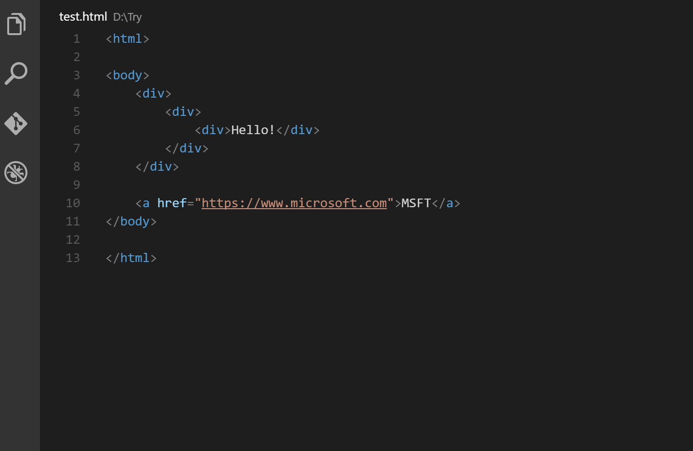

VS Code для вёрстки
Плагин Auto Rename Tag для Visual Studio Code представляет собой мощный инструмент для эффективной работы с HTML-разметкой. Его удобство проявляется в возможности легко и быстро переименовывать теги в HTML-документах, что значительно упрощает процесс редактирования кода.
Одной из важных особенностей этого плагина является его способность автоматически переименовывать все повторяющиеся теги при изменении одного из них. Это означает, что если у вас есть несколько одинаковых тегов в документе и вы решите изменить имя одного из них, Auto Rename Tag автоматически обновит все остальные с тем же именем
Этот функционал значительно повышает производительность разработчика, устраняя необходимость вручную изменять каждый тег по отдельности. Вместо этого можно сосредоточиться на написании кода, а плагин самостоятельно обеспечит согласованность имен тегов в вашем проекте.
Также, следует отметить, что Auto Rename Tag является прекрасным инструментом для поддержания чистоты кода и предотвращения возможных ошибок, связанных с несоответствием имен тегов. Этот плагин обеспечивает автоматизированный и надежный подход к управлению именами тегов, что делает процесс разработки более удобным и эффективным.
